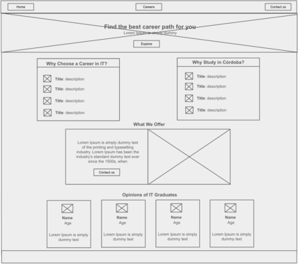
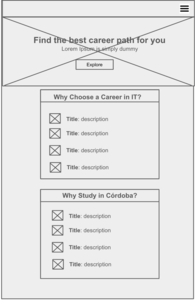
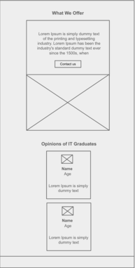

Project Site Plan
Site Name: IT Career Finder
•It describes a place to go when lookind for a career.Site Purpose:
•A site for future students who want to study a technology career in Córdoba, Argentina, and doesn't know where, and how to choose the University and career.Scenarios:
•As a high school student exploring IT career options, I want to receive personalized recommendations based on my interests and skills so that I can find the best-fit career for me.
•As a high school senior interested in pursuing a career in IT, I want to explore various university programs and degrees available so that I can make an informed decision about my higher education.
Color Schema:
#394f77 as the main color.
#e3e5da for text.
#f39c12 to underline the menu items.
Typography: "Montserrat", sans-serif
- For headingsWireframes:


